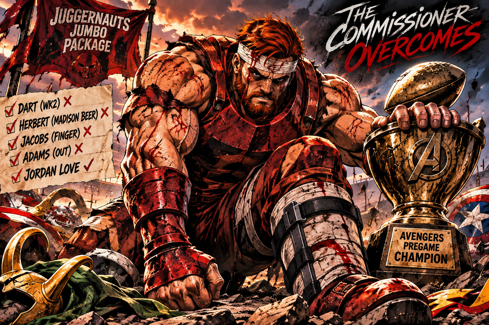

JUGGERNAUT RUNS THROUGH LOKI. AUTHORITIES FIND NOTHING LEFT WORTH IDENTIFYING.
BELT TO ASS: THE COMMISSIONER'S HOSTILE TAKEOVER CONTINUES.

Short story: DK is the commissioner of the greatest goddamn fantasy football league on the planet, and apparently its best fucking coach. Week 9 brought another belt-to-ass performance, this time a 61.52-point demolition of Jake. The biggest blowout of the week. Jake has now lost five straight, which is impressive consistency for someone allegedly trying to win football games.
The numbers are fucking ridiculous. Through nine weeks, DK sits at 7–2, leads the league with 1,492.38 points, averages 165.82 per game, and owns a 51–12 all-play record (81%). Throw in a league-best +241.86 point differential, and this isn't luck. It's a hostile takeover. DK isn't just running Avengers Pregame. He's convincing seven other grown adults to pay $50 annually for the privilege of getting their asses kicked.
And somehow, the son of a bitch keeps overcoming adversity. Jaxson Dart's early knee injury upended one quarterback plan. Justin Herbert, DK's first quarterback drafted, apparently has better things to focus on than DK's fantasy championship aspirations—Madison Beer, for example. And frankly, who the fuck can blame him? So DK turned to Jordan Love, who's been fucking incredible. That's not luck. That's adapting when your original plan goes to shit.
Now Josh Jacobs is dealing with a finger injury, while Davante Adams remains sidelined. The injuries keep piling up, but the commissioner keeps finding answers. Seven wins. The league's highest-scoring roster. Another opponent publicly humiliated. At this point, the only thing stopping the Juggernaut might be the NFL running out of healthy fucking players.